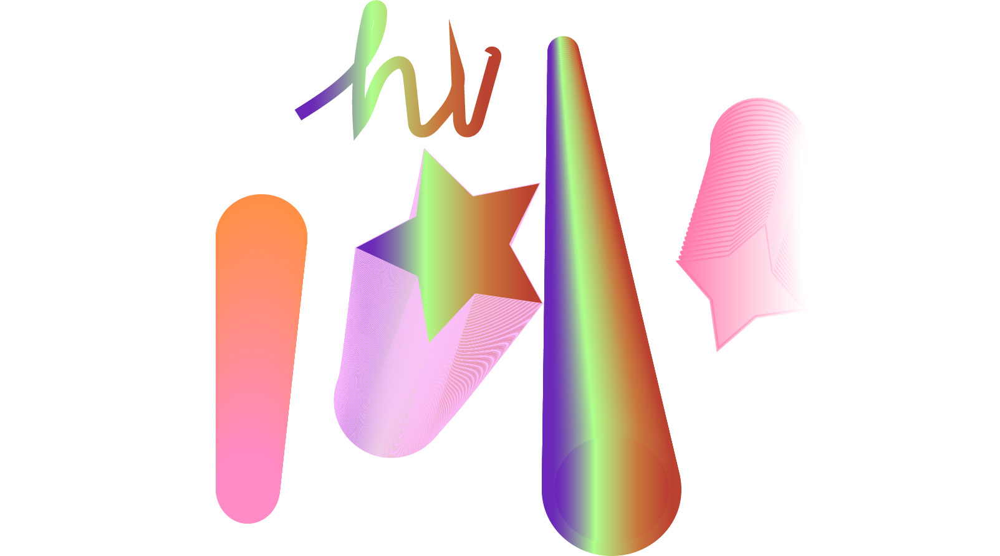

Caitlin Trikofski is an Artist, Muralist, and Comic Artist in San Jose.
Read more about me here or scroll down to view work.
Pit Stop.
I wanted my project to feel warm and safe like a pit stop. I wanted it to feel like it was a nice cool night next to a warm fire in the grass and with nature all around you. I wanted to use the baby chick as a character because I felt it made it cartoony, friendly and safe. The motivation behind my project was to just be happy, take a break and relax. I also just really wanted to have fun with this in creating a scene that would help me calm down and relax if I were in it. I think that’s especially important considering it’s experienceable in VR as well. I wanted the audience to experience this as if they were sitting down with the baby chick, next to the fire. I wanted the proportions to be accurate to where it looked like you were actually sitting and included, able to watch the fire or stars over head. My inspiration for this piece was the feeling of calmness or wanting to go camping. I wanted it to remind you of a possible childhood experience. Although there were no influencers for this piece, I think a lot of it is just what I pulled from my childhood, going camping as a kid and being surrounded by life. I think that’s why I put a lot of grass and tall objects compared to the baby chick, I wanted it to feel immersive. If I were to change one thing, I would add a lot more color to the model to make it seem even more bright and beautiful. All in all, I really enjoyed the project and it helped make me happy and calm while producing it as well.
Under Water View.
I wanted to show a message about someone with social anxiety; you can still feel alone even when there's people all around you.

